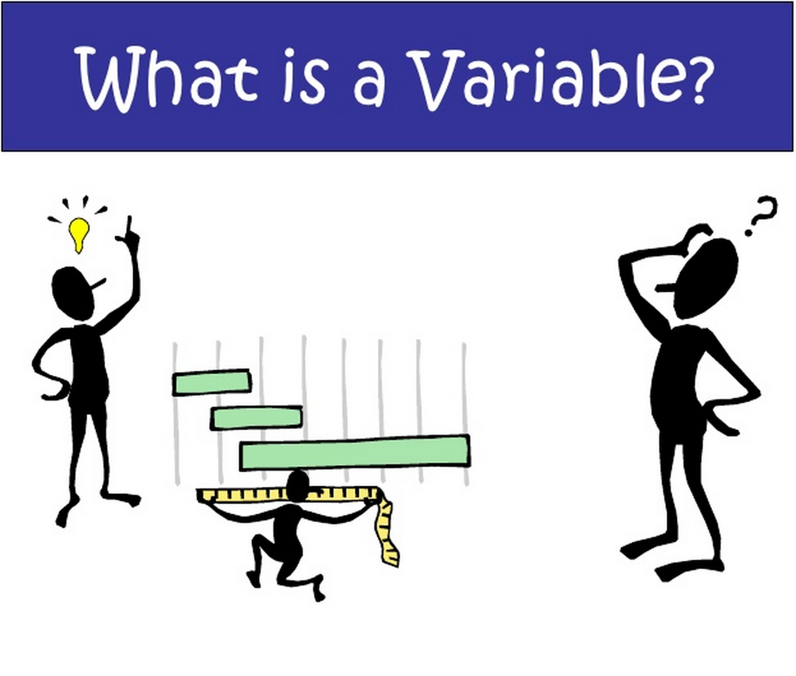
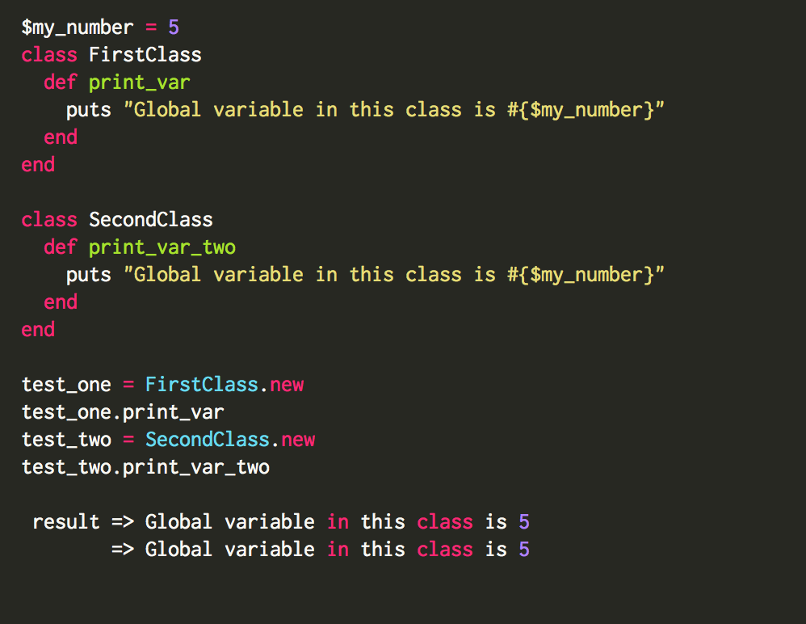
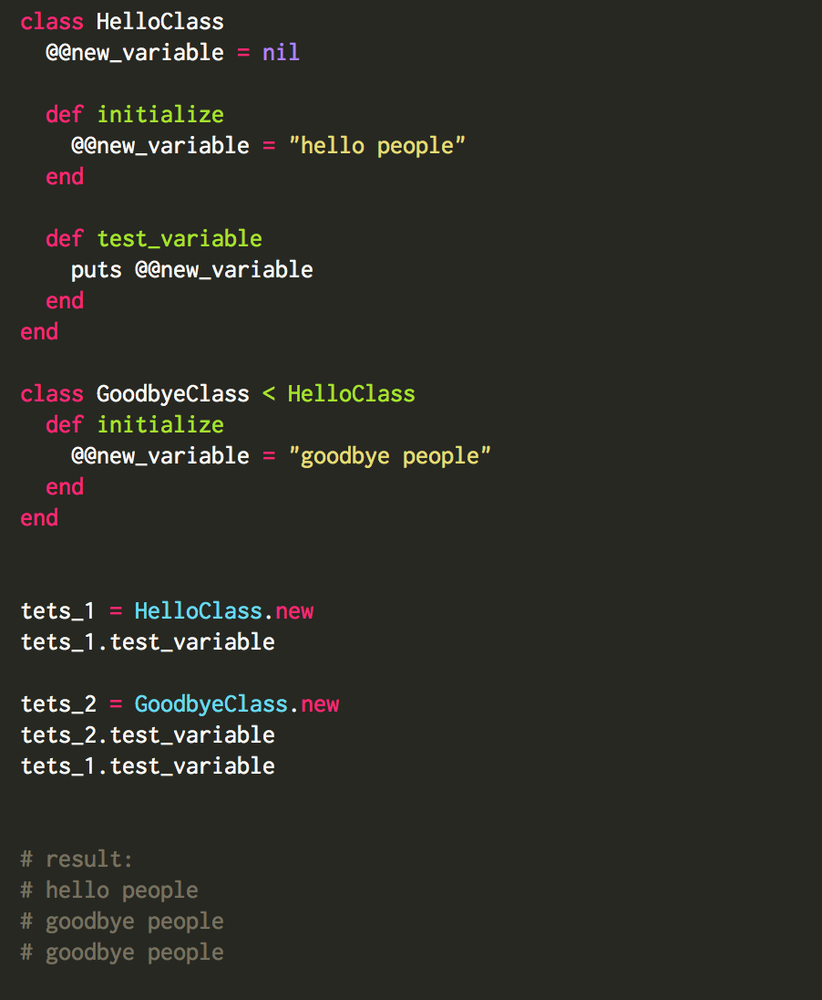
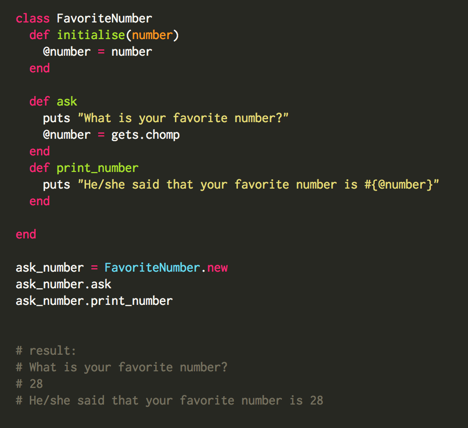
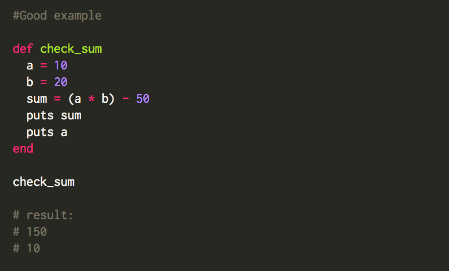

In this blog post we will discuss about what is variable scope, and what kind of variables exist in Ruby.
What is scope in general? Scope is an area of visibility. If we look at this word in programming world, it means absolutely the same, variable scope defines where in the program one or the other variable is accessible. I will give you few examples of variables that we have in Ruby:
$variable - is a global variable that is accessible everywhere in the code for a program.
@@variable - is a class variable that is accessible for all instances of a class, and it doesn’t mean that this variable can be shared between classes, it is available across objects of ne class.
@variable - is an instance variable that is accessible across methods for any particular instance or object. It is similar to class variable, but this variable value is local to specific instances of an object.
variable - is a local variable that is accessible within the method where it was defined, and it is not available outside of this specific method.
VARIABLE - is a constant variable, that is accessible across the class and module, once value is assigned it shouldn’t be changed.
So we’ve described all kinds of variables existing in Ruby. Are you still confused and don’t know how to use them all in your program? Let’s describe each variable separately, what those variables do and where can we use them.

Global variables.
Global variables begin with “$” sign followed by lowercase word
$variable or $new_variable or $shopping_list or whatever you want.
Uninitialized class variable has value of nil. Global variables are valid everywhere in the script that’s why they easily lead to many programming errors. The problem with global variables is that, not only are they visible anywhere in the code for a program, they can also be changed from anywhere in the application, and it makes process of tracking variable and debugging process very difficult.
Global variables should be used only when there is a real reason to use it. Instead of global variables, programmers are advised to use local variables whenever it is possible. Let’s take an example of a $global_variable:

Class variables.
Class variables begin with “@@” sign followed by lowercase word
@@number or @@class_variable or @@display_card or whatever you want.
These variables must be initialized before we use them inside of methods. Uninitialized class variable produces an error. Class variables keep data that belongs to a class, not to an instance. It is not always convenient to use class variables, but programmers do use them for initialization data. Before I show you an example of class variable I want to mention that value of class variable can be changed.

Instance variables.
Instance variable begins with “@“ sign followed by lowercase word
@my_program or @customers or @new_var or whatever you want.
Uninitialized instance variables have the value nil. Instance variables work like a regular class variable, but they differ with those because they are not shared with subclasses, they belong specifically to the class. They can be used inside different methods within the class.

Local variables.
Local variable begins with lowercase or “_”
variable or _new_variable or _fruit or whatever you want.
Local variable declared in a method or within a loop cannot be accessed outside of that loop or method. So it means you can use this variable multiple times just inside of your method, before it is closed. I will show you good and bad example for using local variable:
 In the example above, you can see that I ma trying to print on the screen variable that was defined in the method. And because it is a local variable I get a message error, that variable is not defined.
In the example above, you can see that I ma trying to print on the screen variable that was defined in the method. And because it is a local variable I get a message error, that variable is not defined.

In the example above, I tried to print on the screen variable “a” but I asked my program to do it inside of my method, and we can see that I got a result that I wanted.
Constant variables.
Constant variable usually is written in all upcase
VARIABLE or MY_VARIABLE or SHOPPING_LIST or whatever you want.
Once we gave our constant variable a value, it shouldn’t be changed within our program. It is defined in class or module, and may not be defined inside of the method, uninitialized constant produces an error.

And we came to the end of this blog post. I hope this information was useful for you. Try to use them on your own and you will figure out how everything works.
Thank you,
Iulia